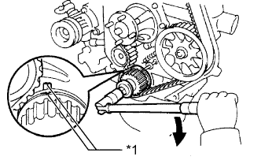
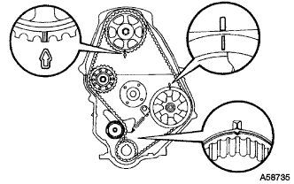
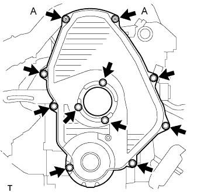

ПРИВОДНОЙ РЕМЕНЬ ГАЗОРАСПРЕДЕЛЕНИЯ > УСТАНОВКА |
| 1. INSTALL NO. 1 TIMING BELT IDLER SUB-ASSEMBLY |
 |
Install the No. 1 belt idler with the 3 bolts.
| Item | Length |
| A | 76.5 mm (3.01 in.) |
| B | 42.9 mm (1.69 in.) |
| C | 41.3 mm (1.63 in.) |
| 2. SET NO. 1 CYLINDER TO TDC/COMPRESSION |
|  |
Using the crankshaft pulley bolt, align the groove of the crankshaft pulley with the timing pointer by turning the crankshaft clockwise.
| *1 | Timing Mark |
 | Turn |
 |
Set the timing and drive pulleys at each position.
| 3. INSTALL TIMING BELT |
 |
Remove any oil or water on each pulley, and keep them clean.
Install the timing belt to the crankshaft timing and timing belt idlers.
 |
Using SST, slightly turn the injection pump drive pulley clockwise. Install the timing belt to the pulley, and align the timing marks of the drive pulley and timing belt case.
| *1 | Timing Mark |
 |
Using SST, slightly turn the camshaft timing pulley clockwise. Install the timing belt to the timing pulley, and align the timing marks of the timing pulley and timing belt case.
| *1 | Timing Mark |
Check that the timing belt has tension between the injection pump drive and camshaft timing pulleys.
Install the timing belt to the No. 1 timing belt idler.
 |
Loosen the No. 1 timing belt idler bolt (A), and stretch the timing belt.
Slowly turn the crankshaft pulley.
Tighten the No. 1 timing belt idler bolt.
| 4. CHECK NO. 1 CYLINDER TO TDC/COMPRESSION |
Slowly turn the crankshaft pulley 2 revolutions from TDC to TDC.
|  |
Check that the timing marks for each pulley align as shown in the illustration.
If the timing marks do not align, remove the timing belt and reinstall it.
| 5. INSTALL TIMING BELT GUIDE |
 |
Install the timing belt guide with the cup side facing outward.
| 6. INSTALL TIMING BELT COVER |
 |
Install 2 new gaskets to the timing belt cover.
| *1 | Gasket |
|  |
Install the timing belt cover with the 11 bolts and washers.
| 7. INSTALL IDLE PULLEY ASSEMBLY |
Install the idle pulley bracket with the 2 bolts.
| 8. INSTALL CRANKSHAFT PULLEY |
Align the key groove of the pulley with the pulley set key, and slide the pulley onto the crankshaft to install it.
 |
Using SST, install the pulley bolt.
| *a | Turn |
| *b | Hold |
| 9. INSTALL VANE PUMP DRIVE PULLEY |
Install the vane pump drive pulley and cooler compressor drive pulley with the 4 bolts.
| 10. INSTALL FAN SHROUD |
Install the fan shroud (See page Нажмите здесь).
| 11. CONNECT CABLE TO NEGATIVE BATTERY TERMINAL |
| 12. INSPECT ENGINE IDLE SPEED |
Warm up the engine.
When using the intelligent tester:
Connect the intelligent tester to the DLC3.
 |
When not using an intelligent tester:
Using SST, connect the tachometer test probe to terminal 9 (TAC) of the DLC3.
| *a | Front View of DLC3 |
| 13. INSPECT MAXIMUM ENGINE SPEED |
Start the engine.
Fully depress the accelerator pedal.
Check the maximum speed.